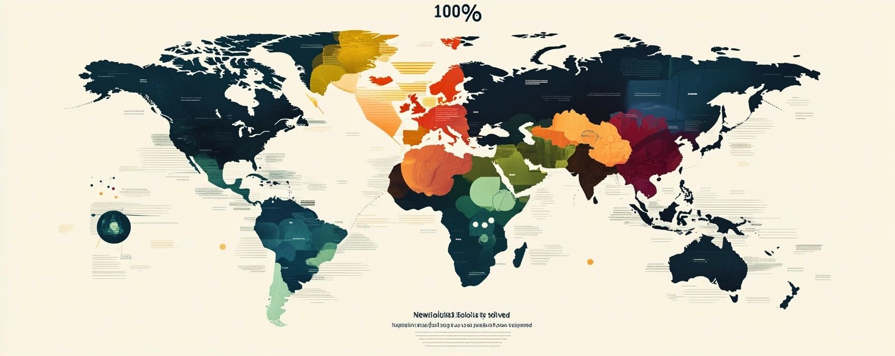

Top 100 Global Issues
- Climate Change (Environmental) – Affects weather patterns, ecosystems, food security, and human survival through rising temperatures, melting ice caps, and extreme weather.
- Poverty (Social/Economic) – A root cause of hunger, poor health, and limited education, impacting billions and hindering global development.
- Inequality (Economic, Social, Racial, Gender) (Social/Economic) – Fuels social tension, restricts opportunities, and perpetuates poverty and conflict.
- Lack of Access to Education (Social) – Limits personal growth, economic progress, and the ability to address other global challenges.
- Political Instability and Conflict (Political) – Leads to war, displacement, economic collapse, and widespread humanitarian crises.
- Corruption (Political) – Undermines governance, economic development, and trust in institutions worldwide.
- Global Health Crises (e.g., Pandemics, Antibiotic Resistance) (Health) – Devastates populations and economies, as seen with diseases like COVID-19 and emerging resistances.
- Environmental Degradation (Deforestation, Pollution, Biodiversity Loss) (Environmental) – Threatens ecosystems, human health, and the planet’s capacity to sustain life.
- Water Scarcity (Environmental) – Impacts drinking water, sanitation, and agriculture, particularly in drought-prone regions.
- Food Insecurity and Malnutrition (Social/Economic) – Causes hunger and poor health, affecting development, especially in vulnerable populations.
- Unemployment and Underemployment (Economic) – Harms economic stability, mental well-being, and social cohesion.
- Human Rights Violations (Social/Political) – Encompasses torture, slavery, and denial of freedoms, affecting millions globally.
- Gender Inequality (Social) – Restricts women and girls’ access to education, healthcare, and economic opportunities.
- Racial Discrimination (Social) – Results in systemic injustice, violence, and unequal resource access.
- Religious Intolerance (Social) – Sparks conflict, persecution, and societal division.
- Terrorism (Social/Political) – Causes loss of life, fear, and regional instability.
- Cybersecurity Threats (Social/Technological) – Endangers infrastructure, privacy, and national security through hacking and cybercrime.
- Artificial Intelligence Risks (Technological) – Poses ethical dilemmas, job displacement, and potential misuse in surveillance or warfare.
- Nuclear Proliferation (Political) – Heightens the risk of catastrophic war and global destruction.
- Migration and Refugee Crises (Social/Political) – Strains resources and creates political and humanitarian challenges due to conflict and climate displacement.
- Urbanization Challenges (Social/Economic) – Leads to overcrowding, housing shortages, and strained infrastructure in rapidly growing cities.
- Aging Population (Social/Economic) – Pressures healthcare, pensions, and workforces, especially in developed nations.
- Mental Health Issues (Social/Health) – A rising crisis impacting productivity and quality of life globally.
- Substance Abuse and Addiction (Social/Health) – Includes drugs and alcohol, contributing to health and social issues.
- Crime and Violence (Social) – Undermines safety, economic growth, and community stability.
- Disinformation and Fake News (Social) – Erodes trust, fuels division, and obstructs informed decision-making.
- Privacy and Data Protection (Social/Technological) – Raises concerns over surveillance and data breaches in an increasingly digital world.
- Digital Divide (Social/Technological) – Limits access to technology and information, exacerbating inequality.
- Trade Imbalances and Protectionism (Economic) – Disrupts global economic cooperation and stability.
- Financial Instability (Economic) – Includes market crashes and recessions that threaten livelihoods.
- Debt Crises (National and Personal) (Economic) – Jeopardizes economic security at individual and governmental levels.
- Inflation (Economic) – Reduces purchasing power, disproportionately harming the poor.
- Tax Evasion and Illicit Financial Flows (Economic) – Robs governments of funds for essential services.
- Corporate Monopolies (Economic) – Stifles competition, innovation, and consumer rights.
- Labor Exploitation (Economic) – Involves poor wages, unsafe conditions, and lack of worker protections.
- Child Labor (Economic/Social) – Deprives children of education and exposes them to harm.
- Human Trafficking (Social/Economic) – A modern slavery crisis affecting millions, especially women and children.
- Deforestation (Environmental) – Destroys habitats, reduces carbon sinks, and displaces indigenous peoples.
- Desertification (Environmental) – Degrades arable land, threatening agriculture and livelihoods.
- Pollution (Air, Water, Soil) (Environmental) – Harms health, ecosystems, and contributes to climate change.
- Plastic Pollution (Environmental) – Contaminates oceans, harms wildlife, and enters food chains.
- Ocean Acidification (Environmental) – Endangers marine life and fisheries critical to global food supply.
- Loss of Biodiversity (Environmental) – Weakens ecosystems and resilience to environmental shifts.
- Overfishing (Environmental) – Depletes fish stocks and disrupts marine ecosystems.
- Habitat Destruction (Environmental) – Drives species extinction and loss of ecosystem services.
- Invasive Species (Environmental) – Threatens native biodiversity and ecosystem balance.
- Antibiotic Resistance (Health) – Makes infections harder to treat, increasing global mortality risks.
- Emerging Infectious Diseases (Health) – Includes zoonotic threats like Ebola and Zika.
- Chronic Diseases (e.g., Diabetes, Heart Disease) (Health) – Major health burdens straining medical systems.
- Malnutrition (Undernutrition and Obesity) (Health) – Impacts health and development across populations.
- Sanitation Issues (Health) – Causes disease in areas lacking proper facilities.
- Waste Management (Environmental) – Challenges with recycling and hazardous waste disposal.
- Energy Poverty (Social/Economic) – Limits access to electricity and clean cooking solutions.
- Renewable Energy Transition (Environmental) – Difficulties in scaling clean energy to replace fossil fuels.
- Transportation Emissions (Environmental) – A key driver of air pollution and climate change.
- Industrial Emissions (Environmental) – Pollutants from manufacturing harm air quality and climate.
- Agricultural Emissions (Environmental) – Methane and nitrous oxide from farming contribute to warming.
- Overconsumption (Environmental/Economic) – Depletes resources and increases waste in wealthy nations.
- Consumerism (Social/Economic) – Fuels unsustainable production and environmental harm.
- Planned Obsolescence (Economic) – Promotes waste through short-lived products.
- E-Waste (Environmental) – Toxic electronic waste poses recycling and health challenges.
- Nuclear Waste (Environmental) – Long-term storage issues for radioactive materials.
- Space Debris (Environmental) – Risks to satellites and space exploration.
- Overpopulation (Social/Economic) – Strains resources and infrastructure in densely populated areas.
- Underpopulation (Social/Economic) – Causes labor shortages in some regions.
- Skills Mismatch (Economic) – Misalignment between workforce skills and job demands.
- Brain Drain (Economic) – Talent loss from developing to developed countries.
- Youth Unemployment (Economic) – Fuels unrest and limits future economic potential.
- Aging Workforce (Economic) – Challenges industries and pension systems.
- Pension Crises (Economic) – Unsustainable retirement funding in aging societies.
- Healthcare Access (Health) – Millions lack basic medical care, especially in poor regions.
- Education Quality (Social) – Issues with teaching and resources in many systems.
- Teacher Shortages (Social) – Impacts education in underserved areas.
- Curriculum Relevance (Social) – Schools often fail to prepare students for modern jobs.
- Digital Literacy (Social/Technological) – Essential yet lacking in many populations.
- STEM Education (Social) – Shortages in science and tech skills.
- Vocational Training (Social) – Limited practical career preparation.
- Lifelong Learning (Social) – Need for ongoing education in a changing world.
- Cultural Preservation (Social) – Loss of indigenous heritage and traditions.
- Language Extinction (Social) – Hundreds of languages face disappearance.
- Historical Revisionism (Social) – Distorts history and spreads misinformation.
- Media Bias (Social) – Undermines trust in journalism.
- Censorship (Social/Political) – Restricts expression and information access.
- Freedom of Speech (Social/Political) – Threatened by authoritarianism and social pressures.
- Freedom of Press (Social/Political) – Vital for democracy but increasingly limited.
- Judicial Independence (Political) – Weakens accountability and rule of law.
- Rule of Law (Political) – Lack of legal enforcement in many areas.
- Electoral Integrity (Political) – Issues like voter suppression and fraud.
- Political Polarization (Political) – Divides societies and stalls governance.
- Extremism and Radicalization (Political/Social) – Drives violence and social division.
- Hate Crimes (Social) – Rising attacks based on identity.
- Domestic Violence (Social) – Affects millions, especially women and children.
- Child Abuse (Social) – Long-term impacts from physical and emotional harm.
- Elder Abuse (Social) – Growing with aging populations.
- Disability Rights (Social) – Lack of inclusion and accessibility.
- LGBTQ+ Rights (Social) – Persistent discrimination and legal barriers.
- Indigenous Rights (Social) – Issues with land and self-determination.
- Refugee Rights (Social/Political) – Challenges for those displaced by war and climate.
- Animal Welfare (Social) – Includes factory farming and poaching concerns.
- Natural Disaster Preparedness (Environmental) – Critical for mitigating impacts of floods, hurricanes, and more.
Solve anything. Evolve everything.